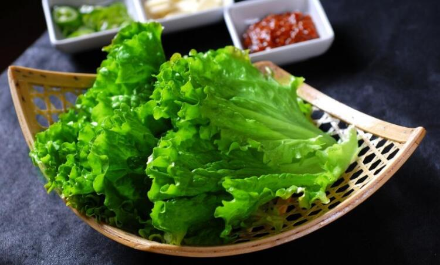

生菜的怎么吃可以减肥？
生菜，专业名字叫做莴苣，一种走遍了全球的绿色蔬菜，在各大菜系和各个小菜系当中都可以看到他们的身影。莴苣自身的营养价值是很高的，但是它被更多女性关注的一个原因，就是减肥。
在很多的减肥食谱当中都可以看到莴苣的身影，他们和各种水果、粗粮等的结合，为女性的身材管理做了不少贡献，不过生菜只有正确食用才可以起到减肥作用，今天就介绍几个减肥的专用吃法。
生菜沙拉
沙拉是减肥食谱当中首当其冲的一种吃法，其实就是各种果蔬的混合，加上沙拉酱调味。生菜就在这其中，但是生菜的量不要太多，比较推荐的沙拉配方有两种：
一、午餐生菜包饭
俗话说早吃好，午吃饱，晚饭可以淡又少。
早上经过了几个消失的体力消耗，到了中午就急需一些营养的补充，同时下午还有好几个小时依然需要体力和营养，所以中午的一顿就很重要，不能蛋蛋吃饱就可以，还需要一定的营养才是对身体最健康的方式。
生菜是一种含水量很高的蔬菜，所以在中午的这一顿沙拉中，生菜的量不需要太多，还需要加一些可以充饥的食物才可以。不过本食谱是相对于正常饭量的女生来说，饭量偏大和偏小的女生可以酌情减少各种配菜的量。
生菜一片，一定要清洗干净，然后提前晾至水分挥发干位置，因为太多的水分会影响口感。生菜的叶子比较大，可以完美的包住我们要吃的食物。
大约50克米饭，和50克玉米粒，20克牛油果粒，以及鸡胸肉30克，再加入少量的盐和黑胡椒，或者自己喜欢吃的不带油腻的调料，在碗中搅拌均匀之后，放进生菜的纵向面的一侧，卷起菜叶将拌好的食物卷成粗调状，等到所有的食物都被卷起来之后，将横向面多出来的菜叶边缘收进去继续卷，直到所有的菜叶都卷起来以后，可以用一根海带丝捆起来。

米饭中含有大量碳水化合物，是人体必备的重要元素，玉米粒有大量的粗纤维可以增加饱腹感，牛油果当中的氨基酸和维生素可以补充人体必须要的营养元素，鸡胸肉可以补充蛋白质，生菜利尿曲水，他们在一起是完美的结合，既可以让下午不会轻易感觉到饿，也不会营养不良。
一般午饭可以吃1-2个生菜卷，不饿位置。稍微饱腹一点也没有关系，因为本身生菜卷没有油腻，容易消化，但是不要撑到，因为胃部撑起来的话，对胃部的正常运转也不好。
二、晚餐生菜豆腐汤
晚上要吃的清单且营养，一般晚饭后就几乎没有多少运动了，且晚餐后到第二天上午早餐之间，有很长的时间，虽然睡眠中不容易感觉到额，但营养还是需要准备充分，晚上休息的时候是人体各项机能休息和恢复元气的时候，所以营养不良的话对身体本身也没有多少好处，因此建议晚餐各项营养一定要均衡。
晚餐推荐生菜豆腐汤。
生菜200克，鲜豆腐200克，两样食材一定要清洗干净，生菜很容易残留农药，因此清洗的时候不可以马虎，豆腐一般都是未包装的食品，所以很容易沾上灰尘和细菌，清洗的时候也要尽量多洗几次。
豆腐切块儿后可以加入500毫升水，小火慢炖，这时候千万不要加入生菜，豆腐可以煮很久，中国饮食界的俗话是千炖豆腐万炖肉，可见豆腐虽然嫩但是却可以煮很久不碎。
豆腐一般都有豆腥味，所以需要至少煮10分钟以上才可以去掉豆腥味，另外这时候也不要加入盐，可以加入自己喜欢的其他调料，如五香粉之类的，酌情加入，但是盐不可以加入，因为盐不能高温煮很久，目前我们所食用的盐都是碘盐，如果煮的太久就会损失很多碘的成分。
等到豆腐煮透了，没有豆腥味的时候，可以加入少量的鸡胸肉、鱼肉等白色肉类，再煮到所有肉类都熟了，即将出锅的时候，再放入生菜，煮1-2分钟即可，放入生菜的时候加入食量盐就可以。
豆腐具有饱腹的作用，同时含有大量的蛋白质，白色肉类的含油量很小，也有足够的蛋白质，生菜中的各种微量元素，也足够我们晚上的营养。
出锅的时候，可以所剩水分已经不到500毫升了，这时候的汤会稍微浓一点点，不过营养非常充足，足够我们晚上的营养需求了。
 上一篇
上一篇